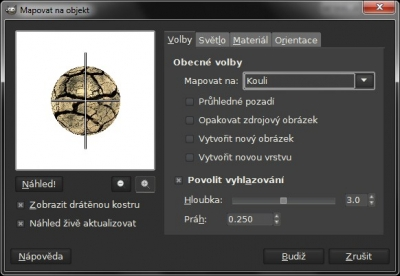
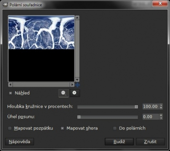
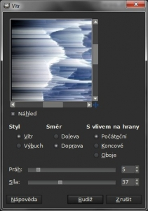
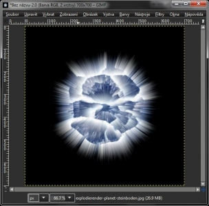

Web je již jen v režimu pro čtení a není možné přidávat nové komentáře nebo dotazy do fóra. Díky za přízeň.
Main menu
You are here
Explodující planeta
28. June 2012 - 11:00 — Lukáš
- Vytvoříme si nový obrázek s rozměry 700×700px a černým pozadím
- Stáhneme si texturu planety (zdroj: gimpusers.com). Otevřeme ji jako vrstvu a roztáhneme na 700×700px. (Vrstva → Škálovat vrstvu)
- Přejdeme na Filtry → Mapa → Mapovat Objekt. Vybereme:
Mapovat na: Kouli
Zaškrtneme: Průhledné pozadí
Na záložce Světlo zvolíme Žádné světlo
 - Vrstvu s nedeformovanou texturou smažeme
- Přejdeme na Filtry → Zkreslení → Polární souřadnice. Odškrtneme „Do polárních“
 - Přejdeme na Vrstva → Transformovat → Otočit o 90st. doprava
- Klikneme na Filtry → Zkreslení → Vítr a nastavíme jej podle obrázku níže:
 - Stiskneme CTRL + F pro zopakování filtru
- Vrstvo otočíme zpět (Vrstva → Transformovat → Otočit o 90st. doleva
- Přejdeme znovu na Filtry → Zkreslení → Polární souřadnice a zaškrtneme „Do polárních“.
 - Zvolíme nástroj Přechod. Přesněji přechod Incandescent a přejdeme na Barvy → Mapování → Mapovat z přechodu.
{kind=link}
{kind=link}
{kind=link}
{kind=link}
{kind=link}
XCF zde: explodujici_planeta.xcf
Kategorie:
Web je již ukončen. Nebude zde přibývat žádný nový obsah. Případné dotazy prosím na l.bacovsky(a)outlook.cz
Comments
Re: Explodující planeta
Re: Explodující planeta
Re: Explodující planeta
CO?? :((
Re: CO?? :((
Re: Explodující planeta
Re: Explodující planeta
Re: Explodující planeta
Re: Explodující planeta
Re: Explodující planeta
Re: Explodující planeta
Add new comment